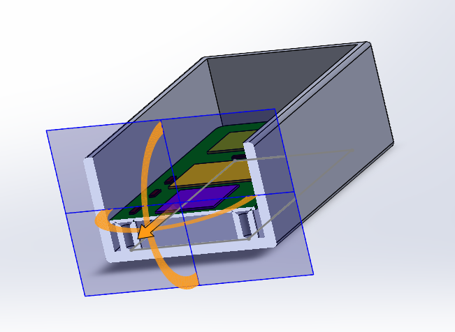
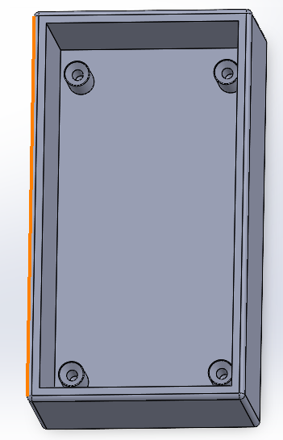
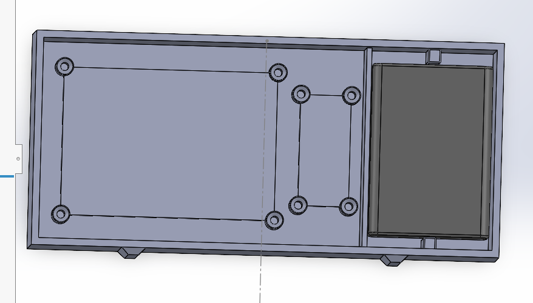
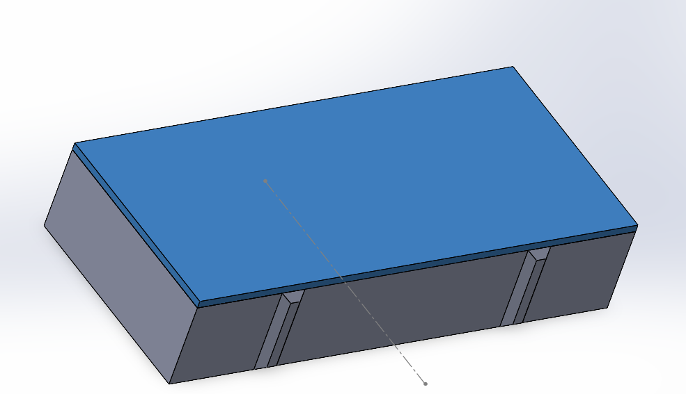
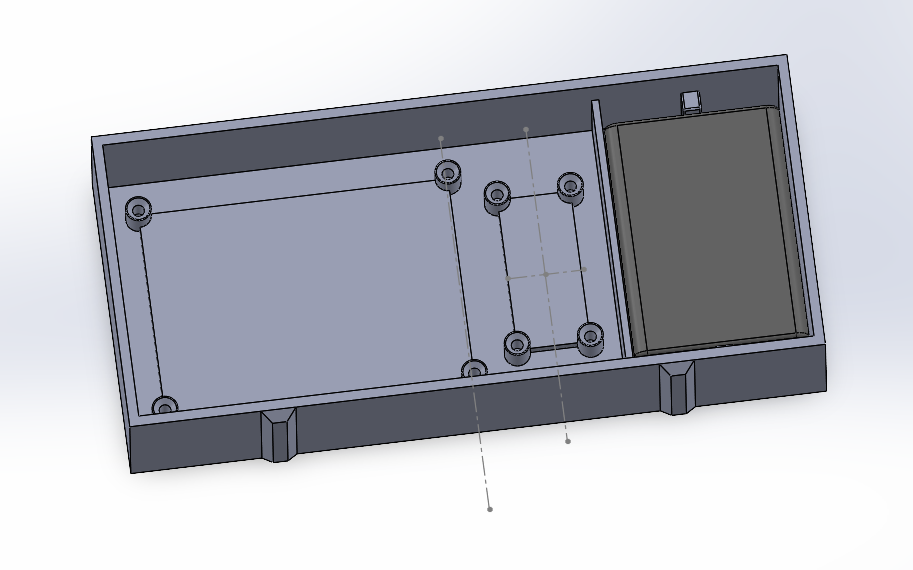
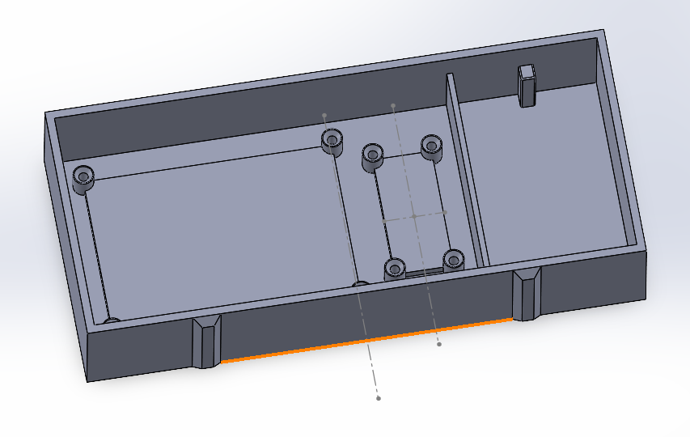
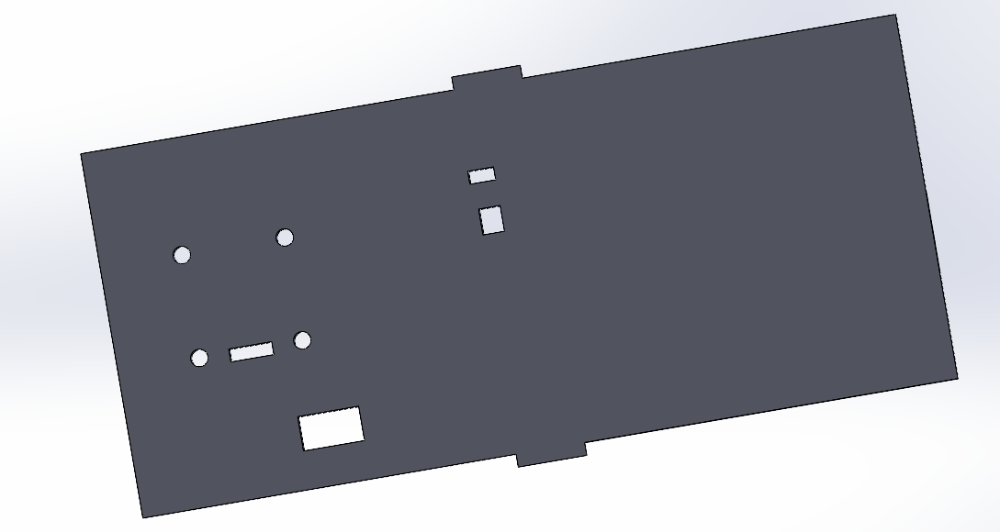
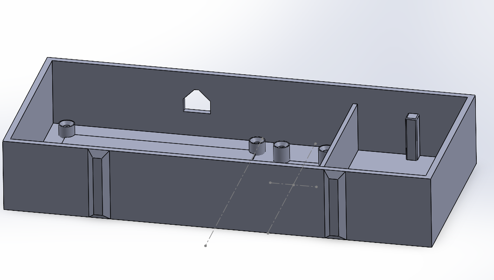

Hieronder was het eerste ontwerp dat ik had. Dit was poging 1 en toen had ik de PCB geïmporteerd in Solidworks. Op deze manier kon ik de gaten maken waar de schroeven in konden.
 Hierna realiseerde ik mij dat ik ook nog een batterijenhouder en relais erin moest verwerken, dus die had ik hierna toegevoegd. Ook had ik de deksel gemaakt en 4 strepen aan de zijkant toegevoegd, puur omdat dit er leuker uit ziet.
   Hierna heb ik het geprint, maar ergens stopte de printer ermee, gelukkig kon ik wel kijken of de layout goed was.

Daarna deed hij hem wel goed en had ik mijn eerste bakje, hier heb ik toen de PCB, relais en batterijenhouder in geplaatst en gekeken hoe zit zat. Na wat kleine aanpassingen paste alles uiteindelijk goed.

Toen realiseerde ik mij dat er nog gaten in de deksel moesten komen, dus toen had ik deze opgemeten en geprint. Dit had ik hierna getestfit en dit paste best redelijk. Ik heb hierna nog kleine aanpassingen moeten maken omdat de kabels er niet goed doorheen konden.

Daarna realiseerde ik mij dat de microcontroller ook nog een kabel moest hebben voor de code en de voeding. Deze heb ik toen toegevoegd en hier heb ik opnieuw een bakje voor geprint.

Uiteindelijk heb ik het nog in een leukere geprint, namelijk goud en hier nog wat kleine aanpassingen gemaakt omdat de afstanden nét niet lekker pastte. Hier heb ik helaas geen foto's van. Als echte eindresultaat heb ik wéér een andere kleur gebruikt, deze is te zien op de foto's hieronder.